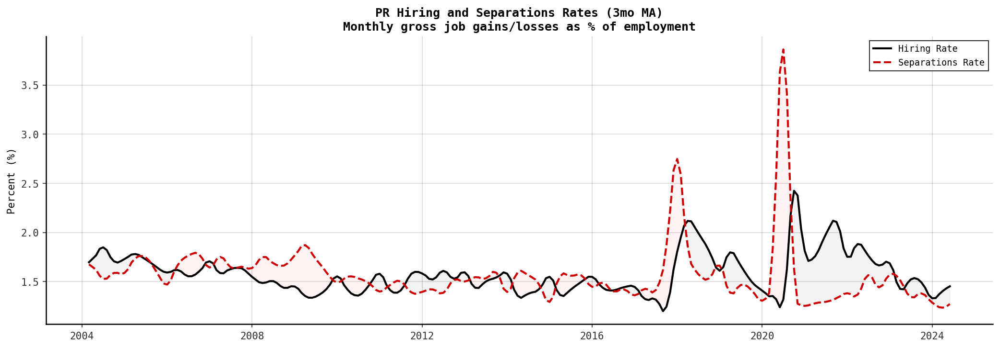
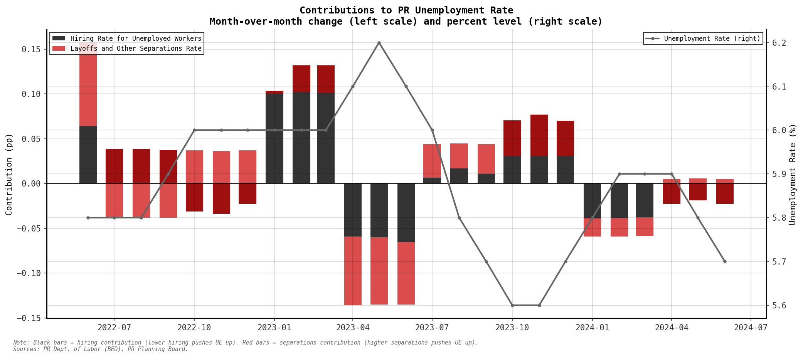
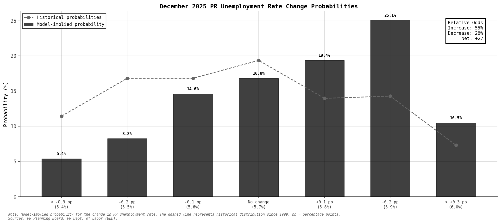
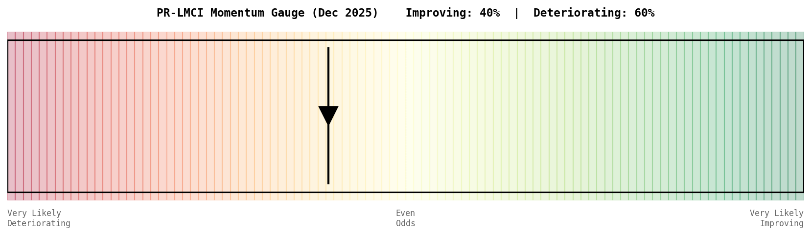
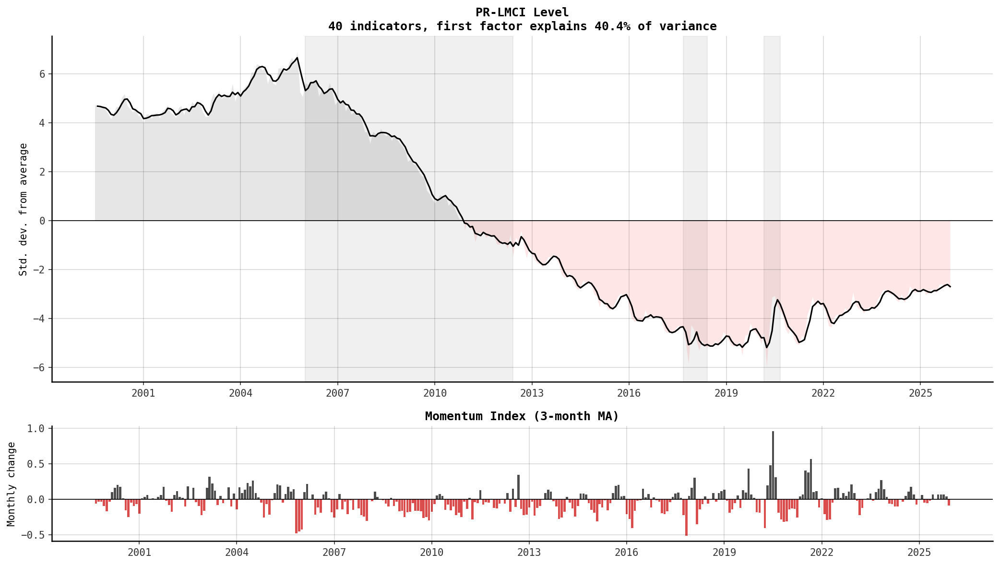
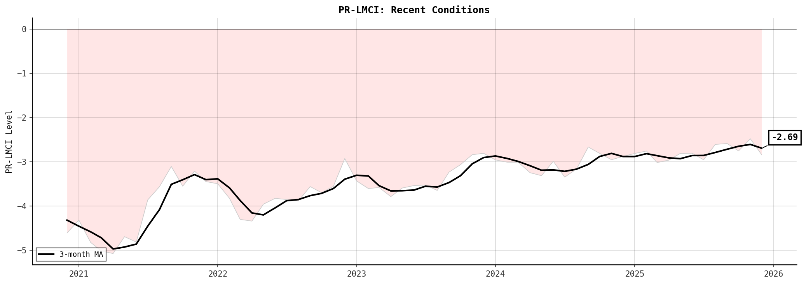
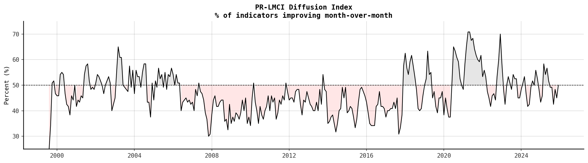

What you are looking at: a monthly summary of Puerto Rico's labor market conditions, combining 40 economic indicators into a single index using a dynamic factor model.
Methodology: The PR-LMCI follows the Chicago Fed Labor Market Conditions Index (Brave and Cole, 2014). It extracts the first principal component from a standardized panel of 40 indicators using EM-PCA to handle missing data.
Three outputs:
Indicator groups (40 series):
Data sources:
Here are the latest estimates for December 2025:
| Latest (December 2025) |
Previous Month (Nov 2025) |
Year Ago (Dec 2024) |
|
|---|---|---|---|
| PR-LMCI Level | -2.69 | -2.61 | -2.88 |
| PR-LMCI Momentum | -0.09 | +0.04 | -0.07 |
| Diffusion Index | 50.0% | 45.0% | 48.3% |
| Hiring Rate | 1.47% | 1.45% | 1.55% |
| Separations Rate | 1.30% | 1.27% | 1.31% |
| Prob. Improving | 52% | -- | |
The Puerto Rico Labor Market Conditions Index (PR-LMCI) was little changed to -2.69 in December 2025, indicating that labor market conditions are below average. The PR-LMCI Momentum registered -0.09, suggesting conditions are deteriorating. The index has been below its historical average for 60 consecutive months (see PR-LMCI Level below).
The hiring rate, which measures gross job gains as a share of employment, stood at 1.47% in the latest period, in line with its 12-month average of 1.43%. The separations rate registered 1.30%, with hiring exceeding separations. The net flow rate of +0.18 percentage points suggests net employment expansion (see Hiring and Separations Rates below).
The unemployment rate fell to 5.7% in the latest period. Over the past three months, changes in the separations rate have been the dominant driver of unemployment rate movements (see Contributions to Unemployment Rate below). Looking ahead, the model-implied probability distribution suggests roughly balanced: 34% odds of a decrease, 32% odds of no change, and 34% odds of an increase (see Unemployment Rate Change Probabilities below).
The diffusion index, which measures the share of indicators improving month-over-month, stood at 50.0%, indicating mixed conditions (see Diffusion Index below). The Momentum Gauge suggests a 52% probability that conditions will improve in the coming month, versus 48% for deterioration.
The current reading places PR labor market conditions at the 41st percentile of all observations since 1999, below the median of historical readings. For comparison, the average PR-LMCI was -3.77 in the pre-Maria period (2015-2017), -4.89 in the post-Maria/pre-COVID period, and -3.33 since mid-2021. The index is currently most influenced by economic activity index, government - sa, cement production (pro-cyclical) and education and health services, professional and business services, excise taxes (counter-cyclical). (See Recent Conditions below.)
What these measure: The hiring rate (black solid) measures gross job gains as a share of total employment. The separations rate (red dashed) measures gross job losses. When hiring exceeds separations, employment is expanding. The shaded area shows the gap.
Data source: PR Business Employment Dynamics (quarterly, interpolated to monthly).

How to read: Black bars show the contribution of hiring (lower hiring pushes UE up). Red bars show the contribution of separations (higher separations pushes UE up). The line on the right axis tracks the actual unemployment rate level.

How to read: Black bars show the model-implied probability for each range of next-month unemployment rate changes. The dashed line shows the historical distribution since 1999. When model-implied probabilities exceed historical benchmarks, that outcome is more likely than usual. The relative odds box summarizes the balance of risks.

How to read: The marker shows the model-implied probability that labor market conditions will improve next month. When the marker is right of center, improvement is more likely than deterioration.

How to read: Values above zero indicate above-average conditions; below zero indicates below-average. The 3-month moving average smooths monthly noise. Grey bands mark the 2006-2012 recession, Hurricane Maria, and COVID-19.

What you see: A close-up of the PR-LMCI with the current reading annotated.

How to read: The diffusion index measures what fraction of the 40 input indicators improved month-over-month. Values above 50% indicate that more indicators are improving than deteriorating (broad-based improvement). Currently at 50.0%.

The PR-LMCI adapts the methodology of the Chicago Fed Labor Market Indicators (Brave, Butters, and Kelley, 2019) to Puerto Rico using locally available data.
Factor model. The PR-LMCI level is the first principal component extracted from a standardized panel of 40 monthly indicators using Expectation-Maximization PCA (EM-PCA), which handles missing observations and ragged edges common in Puerto Rico data releases. The index is normalized so that zero represents the historical average. The PR-LMCI Momentum is the first difference of the level.
Diffusion index. The share of the 40 input indicators that improved month-over-month, smoothed with a 3-month moving average. Values above 50% indicate broad-based improvement.
Labor flows. Hiring and separations rates are derived from the PR Business Employment Dynamics (BED) program, which reports quarterly gross job gains and losses. Quarterly flows are converted to monthly rates by dividing by 3, then expressed as a percentage of total non-farm employment. The contributions to unemployment rate change decompose month-over-month UE changes into the portions attributable to changes in the hiring rate (downward pressure when hiring increases) and the separations rate (upward pressure when separations increase).
Probability forecasts. The unemployment rate change probability distribution compares model-implied probabilities (based on recent flow dynamics) against the historical distribution of monthly UE changes since 1999. The momentum gauge summarizes the net balance of improvement vs. deterioration risk based on the recent trajectory of the PR-LMCI.
Key differences from the Chicago Fed. The Chicago Fed uses Current Population Survey (CPS) microdata and real-time private sector data (ADP, Indeed, Google Trends, Morning Consult) combined via partial least squares (PLS). These sources are not available for Puerto Rico. Instead, the PR-LMCI uses a curated panel of 40 indicators drawn from the PR Planning Board, BED job flows, DOL unemployment insurance claims, and DDEC auto sales as inputs to a standard PCA factor model. Indicators were selected through a multi-evaluator consensus process prioritizing non-redundancy, category balance, and minimum sample size.
References:
The PR-LMCI data is available for download in CSV format.